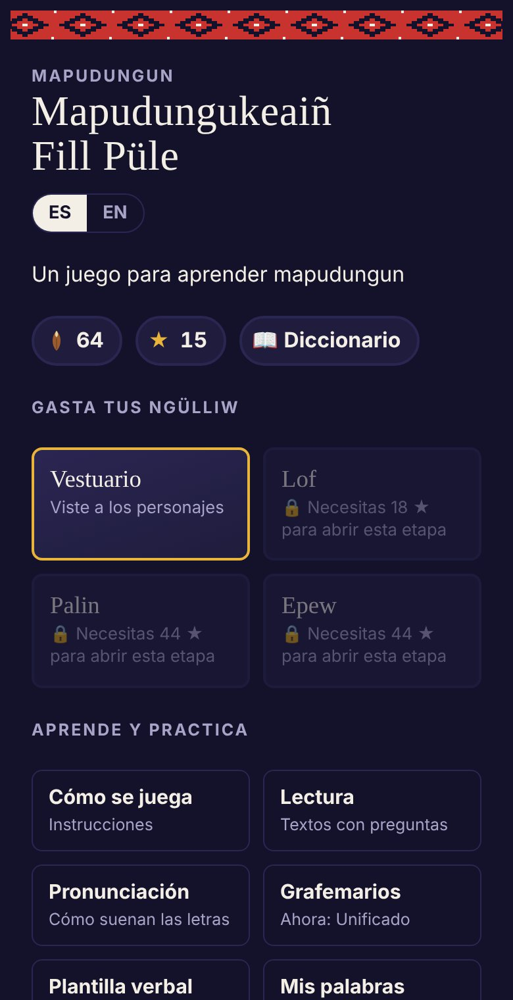

Un juego para aprender mapudungunA game for learning Mapudungun
Mapudungukeaiñ Fill Püle
«Hablemos mapudungun en todas partes.» Un juego gratuito, en español y en inglés, que lleva paso a paso desde el primer mari mari hasta formar verbos con varios sufijos. Funciona en el teléfono y sin conexión.“Let's speak Mapudungun everywhere.” A free game, in Spanish and English, that goes step by step from a first mari mari to building verbs with several suffixes. It runs on your phone and works offline.
68niveleslevels
7etapasstages
230palabras y fraseswords and phrases
14lecturasreadings
9capítulos de epewepew chapters
